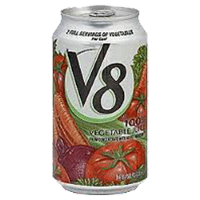
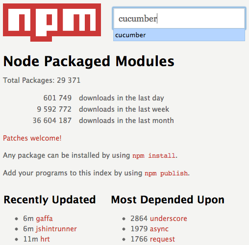

Node.js
JavaScript unleashed
by Julien Biezemans | @jbpros
Julien Biezemans
Web developer and tester.
Agile trainer & speaker.
Cucumber core team member.
Creator of Cucumber.js.
You
Raise your hand if...
You wrote JavaScript code before
You played with Node.js before
The way we do I/O is wrong, we need something different.Ryan Dahl, 2009
var results = db.query("SELECT * FROM records");
// wait for I/O...
doSomethingWith(results);Blocking I/O
Threads?
Still CPU and memory intensive
Needs machinery, lacks abstraction
Callbacks
Pass a function to be called when done
Not common
- file system
- networking
- DNS
- C/C++
- Ruby
- ...
Fortunately...
JavaScript
Designed with asynchronicity in mind
db.query("SELECT * FROM records", function (results) {
doSomethingWith(results);
});Server-side JavaScript environment

Runs on
- Mac OS
- Linux
- Windows
Based on an asynchronous event-driven model
var query = db.query("SELECT * FROM records");
query.on("results", function (results) {
doSomethingWith(results);
});Hello World
CommonJS
JavaScript specifications for a broad range of apps
- Testing
- Modules
- Packages
- Console
- ...
Modules
var http = require("http");// some_file.js
var myModule = require("./my_module.js");
myModule.doSomethingUseful();// my_module.js
var myModule = {
doSomethingUseful: function () {
console.log("Hi there!");
}
};
module.exports = myModule;Node ecosystem


Show us!
Documentation
Support
- Dynamic community
- Conferences
- IRC
- Mailing list
- Stack overflow
Should I
... build my next thing with it?
I don't know, it's not the silver bullet
but...
Excellent performances
Great for building web backends and network applications
And all I/O-dependent stuff, really.
JavaScript is a cool language
Unix philosophy
Do one thing, but do it well
You won't be alone
That's all folks
Questions?